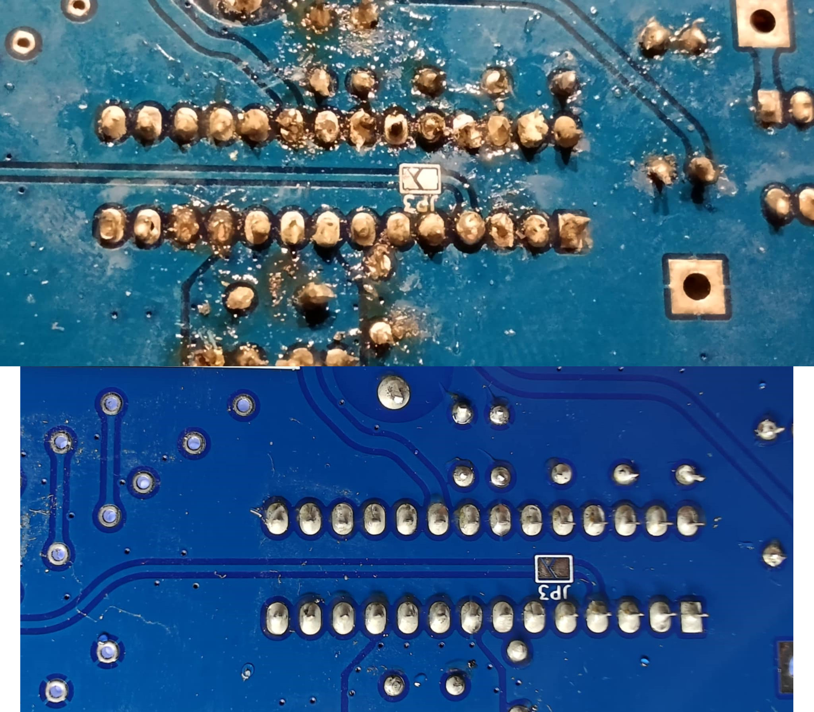

Guide de Dépannage
Ce chapitre vous aide à diagnostiquer et résoudre les problèmes courants rencontrés lors de l’assemblage et de l’utilisation du Mk2PVRouter.
Important
Avant de commencer le dépannage :
Toujours couper l’alimentation au disjoncteur avant toute intervention
Vérifier l’absence de tension avec un testeur
Prendre des photos avant de modifier quoi que ce soit
Noter tous les symptômes observés
📋 Composants selon la configuration
Ce guide couvre la carte universelle 3phaseDiverter du Mk2PVRouter.
Composant |
Monophasé |
Triphasé |
|---|---|---|
Fusibles |
FS0, FS1 |
FS0, FS1, FS2, FS3 |
Transformateurs |
TR1 |
TR1, TR2, TR3 |
Modules de protection |
GM1 |
GM1, GM2, GM3 |
Alimentation 5 V, régulateur 3,3 V |
PS1 (MPC10-5), U1 (AP7361C-33E) |
PS1 (MPC10-5, commun), U1 (AP7361C-33E) |
Capteurs de courant (CT) |
1 CT (réseau) + 1 CT facultatif (énergie routée, CT2) |
3 CT (un par phase) |
Sorties triac |
1 ou plusieurs (selon modèle) |
1 ou plusieurs (selon modèle) |
Sorties relais |
0 ou plusieurs (selon modèle) |
0 ou plusieurs (selon modèle) |
Note
Dans ce guide, les instructions utilisent la notation :
Mono : composants pour version monophasée
Tri : composants pour version triphasée
🔌 Problèmes Après Soudure de la Carte
La Carte ne s’Allume Pas
Symptôme : Pas de tension aux points de test, aucun signe de vie
Vérifications de Base
Effectuez ces vérifications dans l’ordre :
Liste de contrôle — Alimentation
☐ L’alimentation secteur est-elle branchée ?
☐ Le disjoncteur est-il enclenché ?
☐ Fusibles intacts ?
Mono : FS0, FS1
Tri : FS0, FS1, FS2, FS3
Vérifier avec multimètre en mode continuité, routeur hors tension : un fusible intact laisse passer le courant (le multimètre bipe, environ 0 Ω) ; un fusible fondu est ouvert (pas de bip)
Un fusible fondu a coupé une surintensité : cherchez-en la cause avant de le remplacer (voir Fusible Saute Immédiatement)
☐ Tension au point Test VCC = 3,3 V ou 5 V ?
Multimètre en mode tension continue (DC)
Mesurer entre VCC et GND
Si pas de tension → Problème alimentation
Si Pas de Tension au Test VCC
Avertissement
COUPER L’ALIMENTATION avant toute vérification de composants !
Vérifier les composants d’alimentation :
Composants à vérifier
☐ Module PS1 (MPC10-5) dans le bon sens ?
Vérifier l’orientation selon le schéma
Vérifier l’orientation du module d’après la sérigraphie de la carte
☐ Chaîne d’alimentation bien soudée ?
Composants traversants que vous avez soudés : connecteur secteur PWR1, fusibles (Mono : FS0, FS1 ; Tri : FS0 à FS3), module PS1, condensateur C1, self FL1, protections GM1–GM3 (les composants CMS, comme le régulateur U1, sont soudés en usine)
Soudures brillantes et lisses (pas ternes) ?
Qualité des Soudures

Exemples de bonnes et mauvaises soudures
Caractéristiques d’une bonne soudure :
✅ Aspect brillant et lisse
✅ Forme de volcan (concave)
✅ Mouille à la fois la patte et la pastille
✅ Pas de boule séparée
Soudure froide (défectueuse) :
❌ Aspect terne, granuleux
❌ Soudure en boule qui ne mouille pas
❌ Fissures visibles
❌ Contact électrique mauvais ou inexistant
Solution : Refaire les soudures suspectes :
Chauffer à nouveau avec fer à souder (350 °C)
Ajouter un peu de flux si disponible
Ajouter un peu de soudure fraîche
Laisser refroidir sans bouger
Pont de Soudure (Court-Circuit)
Symptôme : Deux pistes ou broches reliées par erreur
À faire
Ajouter photo de pont de soudure (img/pont-de-soudure.png)
Détection :
Inspection visuelle avec une loupe
Multimètre en mode continuité entre broches qui ne devraient pas être connectées
Solution — Retrait avec tresse à dessouder :
Placer tresse à dessouder sur le pont
Appliquer fer à souder sur la tresse
La soudure est absorbée par capillarité
Répéter si nécessaire avec section propre de tresse
Alternative — Retrait avec pompe à dessouder :
Chauffer le pont avec fer à souder
Approcher la pompe
Activer la pompe (aspiration)
Nettoyer et recommencer si nécessaire
Si Tension Correcte mais Pas de Fonctionnement
Vérifications microcontrôleur
☐ ATmega328P bien inséré dans le support ?
Toutes les pattes dans les trous ?
Pas de patte pliée sous le boîtier ?
☐ ATmega328P dans le bon sens ?
⚠️ CRITIQUE : Encoche alignée avec marquage PCB ?
Si inversé → Puce détruite à la mise sous tension !
Vérifier 3 fois avant d’alimenter
☐ Firmware programmé ?
Voir la section Installation et tests — Monophasé ou Installation et tests — Triphasé
ATmega328P vierge ne fait rien
Causes Fréquentes — Résumé
Symptôme |
Cause Probable |
Solution |
|---|---|---|
Aucune tension VCC |
Fusible fondu |
Trouver le défaut qui l’a fait fondre (voir Fusible Saute Immédiatement), puis remplacer le fusible par un fusible de même calibre |
Tension VCC faible (< 3,2 V) |
Régulateur U1 ou module PS1 défectueux |
Vérifier l’orientation, remplacer |
Tension OK, rien ne fonctionne |
ATmega328P mal inséré/inversé |
Vérifier l’orientation, réinsérer |
Soudures ternes |
Soudure froide |
Refaire les soudures avec plus de chaleur |
Problèmes de Programmation du Firmware
Le Firmware ne se Téléverse Pas
Symptôme : Erreur dans Arduino IDE lors du téléversement
avrdude: stk500_recv(): programmer is not responding
avrdude: stk500_getsync() attempt 1 of 10: not in sync
Vérifications de la Connexion FTDI
Liste de contrôle — Connexion FTDI
☐ Câblage FTDI correct ?
Adaptateur FTDI branché broche à broche sur le connecteur FTDI (J0), GND de l’adaptateur sur la broche 1 (repère « GND> »)
TX de l’adaptateur → broche 4 (RX de l’ATmega328P), RX de l’adaptateur → broche 5 (TX de l’ATmega328P)
DTR → broche 6 (DTR) : reset automatique, indispensable
VCC : non utilisé (la broche 3 n’est reliée à rien sur la carte)
☐ ATmega328P bien inséré ?
Toutes les pattes dans le support ?
Orientation correcte (encoche) ?
☐ Routeur alimenté en 230 V ?
Le FTDI ne fournit PAS de courant
Alimentation secteur obligatoire
☐ Bon port COM sélectionné dans Arduino IDE ?
Menu : Outils → Port → COMX
Essayer chaque port disponible
☐ Pilotes FTDI installés ?
Télécharger les pilotes sur ftdichip.com
Windows : Gestionnaire de périphériques doit montrer « USB Serial Port »
Linux :
dmesg | grep ttydoit montrer nouveau périphérique
Problèmes Port USB Windows
Symptôme : Port COM n’apparaît pas dans Arduino IDE
Solutions :
Vérifier Gestionnaire de périphériques
Ouvrir : Panneau de configuration → Gestionnaire de périphériques
Chercher : « Ports (COM et LPT) »
Doit afficher : « USB Serial Port (COMx) »
Si point d’exclamation jaune → Pilote problématique
Réinstaller les pilotes FTDI
Désinstaller pilote actuel (clic droit → Désinstaller)
Débrancher FTDI
Redémarrer ordinateur
Rebrancher FTDI
Windows devrait installer automatiquement
Essayer autre port USB
Certains ports USB peuvent avoir problèmes
Préférer ports USB directs (pas hub)
Problèmes Arduino IDE
Configuration Arduino IDE
☐ Type de carte correct ?
Menu : Outils → Type de carte → Arduino Uno
Pas Arduino Nano, pas Mega
☐ Processeur correct ? (si option disponible)
ATmega328P
☐ Port libre ?
Aucun autre programme (terminal, moniteur série d’un autre logiciel) ne doit occuper le port pendant le téléversement
Solutions supplémentaires :
Fermer et rouvrir Arduino IDE
Débrancher/rebrancher FTDI
Essayer sur autre ordinateur (test matériel vs logiciel)
Firmware se Téléverse mais Rien ne Fonctionne
Symptôme : Téléversement réussi mais routeur inactif
Vérification via Moniteur Série
Ouvrir Moniteur Série
Menu : Outils → Moniteur série
Ou raccourci : Ctrl+Maj+M
Régler les paramètres en bas à droite :
Baud rate : 9 600
Fin de ligne : sans importance (le routeur ne lit rien sur le port série)
Redémarrer le routeur : l’ouverture du moniteur série le redémarre (signal DTR). Sinon, fermer puis rouvrir le moniteur série, ou couper puis remettre l’alimentation. Le kit triphasé comprend un bouton reset monté en façade, relié au connecteur J1 « RESET » de la carte-mère : un appui redémarre le routeur.
Vous devriez voir, après 3 secondes, la configuration du routeur, terminée par
----, puis une ligne de mesures toutes les 5 secondes (par défaut). Extrait d’une capture réelle, en triphasé avec la sortieHumanReadable:---------------------------------- Sketch ID: Mk2_3phase_RFdatalog_temp From branch 'dev', commit 0d88595e ... Datalogging capability in Human-readable format ... ---- 308.52, P:-2, P1:0, P2:-1, P3:-1, V1:232.86, V2:232.88, V3:233.12, (minSampleSets/MC 32, #ofSampleSets 8011)
En monophasé, la ligne de mesures donne
P:,V:et, avec la sonde CT2,diverted <W> W, <Wh> Wh. Voir aussi Messages Attendus dans Installation et tests — Monophasé ou Installation et tests — Triphasé.
Si pas de messages :
Diagnostics oscillateur
Le microcontrôleur nécessite un oscillateur pour fonctionner.
☐ Quartz/résonateur bien soudé ?
Composant à 2 pattes près de l’ATmega328P
Soudures correctes ?
Si la configuration est lisible, mais la suite illisible :
C’est normal avec le
config.hfourni :SERIAL_OUTPUT_TYPEy est enIoT. Le routeur affiche sa configuration à 9600 bauds 8N1, puis passe en 7E1 pour le module mk2Wifi.Pour lire les mesures au moniteur série, passer
SERIAL_OUTPUT_TYPEàSerialOutputType::HumanReadabledansconfig.het téléverser à nouveau.
Si rien n’est lisible :
Vérifier que le baud rate = 9 600
Si toujours illisible → Problème oscillateur (fréquence incorrecte : quartz X1 16 MHz, condensateurs C7/C8)
Erreur « Out of Memory » lors de la Compilation
Symptôme :
Sketch too big; see https://support.arduino.cc/hc/en-us/articles/360013825179
Cause : Trop de fonctionnalités activées dans config.h
Solution :
Ouvrir onglet
config.hdans Arduino IDEDésactiver les fonctionnalités non nécessaires : mettre à
falsecelles qui ne servent pas, parmiENABLE_DEBUG,RF_LOGGING_PRESENT,RELAY_DIVERSION,TEMP_SENSOR_PRESENTetDUAL_TARIFF. Par exemple :inline constexpr bool ENABLE_DEBUG{ false }; inline constexpr bool RF_LOGGING_PRESENT{ false };
Ne pas mettre ces lignes en commentaire : le firmware ne compilerait plus. Une fonction désactivée doit aussi avoir sa broche à
unused_pin(par exempledualTariffPin, ou la broche detemperatureSensing), sinon la compilation le signale. Le configurateur (monophasé, triphasé) fait ces changements de façon cohérente.Recompiler et téléverser
Obtenir de l’aide
Si aucune solution ne fonctionne
Ressources communautaires
Communauté Facebook : https://www.facebook.com/groups/3571488193062570
Moteur de recherche (problème déjà résolu ?)
Poster nouveau sujet avec détails
Email support : mk2pvrouter.france@gmail.com
Temps réponse : 2–5 jours ouvrés
GitHub Issues :
Bugs du firmware : https://github.com/FredM67/PVRouter-3-phase/issues (triphasé) ou https://github.com/FredM67/PVRouter-1-phase/issues (monophasé)
Erreurs ou suggestions pour la documentation : https://github.com/FredM67/Mk2PVRouter/issues
Informations à fournir
Important
📞 Pour obtenir une aide efficace, inclure :
☐ Description détaillée problème
Symptômes observés
Quand ça se produit
Qu’avez-vous déjà essayé ?
☐ Photos haute résolution
Dessus carte (composants)
Dessous carte (soudures)
Zones suspectes en gros plan
☐ Mesures électriques
Tensions aux points de test
Résistances composants suspects
☐ Messages d’erreur complets
Copier-coller depuis Moniteur Série Arduino IDE
Ou capture d’écran
☐ Informations configuration
Version firmware (voir Moniteur Série au démarrage)
Configuration (mono/tri, nombre sorties)
Système 3,3 V ou 5 V ?
📸 Photos utiles — exemples
Photo dessus (composants) :
Vue d’ensemble carte complète
Netteté suffisante pour lire références composants
Éclairage uniforme sans reflets
Photo dessous (soudures) :
Macro sur soudures suspectes
Toutes soudures visibles (pas de zones d’ombre)
Angle permettant voir qualité (brillant/terne)
Photos contexte :
Installation dans boîtier
Câblage complet
Connexions CT
Étiquettes équipements
Avant de poster
Checklist pré-demande :
☐ J’ai lu toute la section pertinente du guide dépannage
☐ J’ai vérifié tous les points de la liste de contrôle
☐ J’ai cherché le problème sur forum (peut-être déjà résolu)
☐ J’ai préparé photos/mesures/infos nécessaires
☐ J’ai relu pour clarté et complétude
Astuce
Plus votre demande est précise et documentée, plus rapide sera la résolution !
🛠️ Annexe — Outils de diagnostic essentiels
Multimètre — utilisation de base
Mode Tension Continue (V⎓ ou VDC) :
Mesurer VCC et les tensions d’alimentation
Sonde noire sur GND, rouge sur point à mesurer
Calibres : 20 V pour 3,3 V/5 V, 200 V pour >12 V
Mode Tension Alternative (V~ ou VAC) :
Mesurer 230 V secteur
⚠️ Danger haute tension !
Calibre minimum : 750 V
Mode Résistance (Ω) :
Mesurer les résistances, tester la continuité
⚠️ Toujours hors tension !
Calibres : 200 Ω, 2 kΩ, 20 kΩ, 200 kΩ
Mode Continuité (♪) :
Tester connexions, détecter court-circuits
Bip si résistance <50 Ω
Idéal pour vérifier soudures, tracer pistes
Loupe ou microscope USB
Utilité :
Inspecter qualité soudures
Détecter ponts microscopiques
Vérifier l’orientation des composants CMS
Recommandation :
Loupe ×5 à ×10 minimum
Microscope USB 200× pour inspection détaillée
Éclairage LED intégré essentiel
Oscilloscope (optionnel)
Pour diagnostics avancés :
Visualiser le signal de commande des étages de sortie, côté basse tension uniquement (connecteur Molex de la carte-mère) ; jamais sur la gâchette du triac ni côté puissance : la masse de l’oscilloscope est reliée à la terre
Vérifier oscillateur ATmega328P
Analyser les formes d’onde de l’ADC
Alternative économique :
Oscilloscope USB 20 MHz (50–100€)
Suffisant pour diagnostics DIY
Pince ampèremétrique
Utilité :
Mesurer courant sans couper câble
Vérifier puissance réelle charge
Indispensable pour étalonnage
Spécifications minimum :
Plage : 0–20 A AC
Précision : ±3 %
Lecture True RMS recommandée
Conclusion
Ce guide de dépannage couvre les problèmes les plus fréquents rencontrés lors de l’assemblage et de l’utilisation du Mk2PVRouter.
Important
Règles d’or du dépannage :
Toujours couper l’alimentation avant intervention
Procéder méthodiquement (listes de contrôle)
Prendre photos AVANT toute modification
Au moindre doute : demander de l’aide plutôt que forcer
Un composant coûte moins cher qu’un routeur détruit !
En cas de doute sérieux :
Ne pas prendre de risques avec 230 V
Faire appel à un électricien qualifié
Votre sécurité prime sur tout le reste
Astuce
💡 Prévention > Réparation
Vérifier 3 fois avant de souder
Tester progressivement (pas tout d’un coup)
Noter les modifications (traçabilité)
Prendre des pauses (fatigue = erreurs)
Bon courage dans votre dépannage ! 🔧